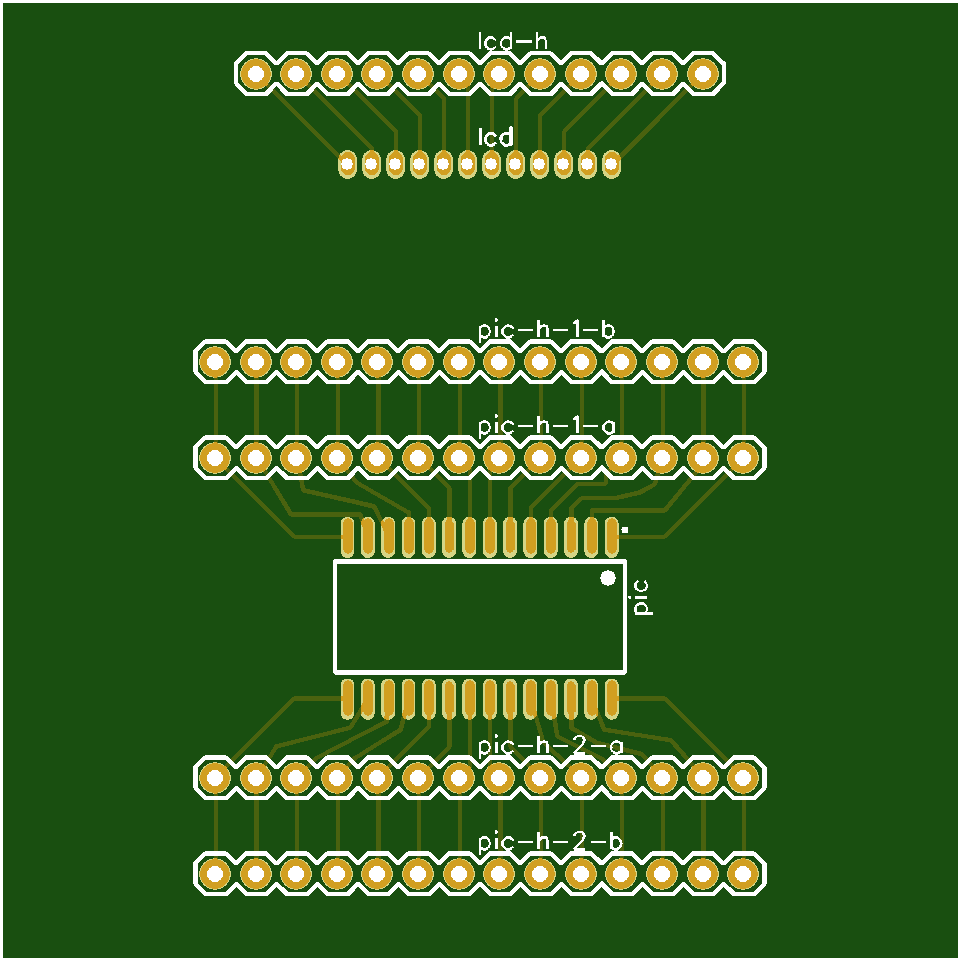

This past summer I started building a watch. My idea was to combine a simple digital watch display with a nice watch case. Though it was more involved than I anticipated, it's finally fairly complete!
The toughest challenge with this watch was finding a way to use the traditional rotating crown to set the digital time on the watch.
After a great deal of experimenting, I attached a magnetic rotation sensor to the PCB and a magnet to the stem (the metal rod extending from the crown), which made it possible to digitize the rotation of the crown. Because watches must be very energy efficient, and because the magnetic sensor requires power, there is a reed switch that closes when the crown is extended, and only then is the sensor activated. This also provides a way to "set" the time, by inserting the crown and disabling the sensor.
Alternate view of the magnetic sensorYou might notice that the sensor is mounted perpendicular to the PCB. I wasn't able to find any rotational magnetic sensor in a small enough package that didn't require the magnet to be directly above it -- and because the crown could only come from one direction, that meant mounting it perpendicular to the main PCB.
The solution was to create a second, tiny PCB that would fit into a slot on the main board. A combination of the slot and solder then hold the second board in place. This piece could be printed along with the primary circuit board thanks to existing slot in the PCB required for the watch stem.
I began this project without much hardware experience, so it took many steps to get to a functional watch.
The first step was building a "clock" using an arduino board, a 4-digit LED display, and an encoder. It was huge, used a lot of power, and wasn't accurate, but it was a clock!
I decided to try skipping the Arduino layer and go straight to the Microchip programming environment, which would set me up for using whichever chip I wanted and allow me to take advantage of the chip's LCD drivers (which are a whole lot more complicated than driving LED displays because they rely on AC current). This was a fateful choice - it gave me more flexibility, but meant skipping all of the support of the Arduino community.
Once I had tested programming a board using Microchip's MPLab X IDE, I sourced a suitable LCD and put together a third "clock". It's not accurate or small, but its power consumption is nice and low. (It's still running on its original batteries!)
Finally, I picked up a quartz crystal and managed to hook it up and configure it correctly, yielding a roughly accurate, low-power clock! (Still large, though). Note the PCB - this was my first experience designing a board through JLCPCB, and it was an encouraging experience.
At this point, my primary need was to shrink the PCB to fit inside of a watch case.
The design went through a series of iterations, each testing out different requirements, from a round PCB, to a slot in a PCB, to a sub-board embedded within the PCB, and finally to a notch in the circular PCB to latch it into the watch case.
Ultimately I was able to put a 40mAh battery in the watch. I used the PIC16LF1936 microchip, which can run on an external crystal at 600nA. The LCD display uses some additional power, but the watch spends most of its time only concerned with those two components. I haven't been able to make accurate measurements yet, but my voltmeter reports that it consumes around 10 microamps generally. This gives me at least half of a year on a battery (and I suspect much more).
The magnetic sensor uses about 3mA, and when setting the clock the chip is not put into sleep mode, so you wouldn't want to leave the watch with the crown out overnight.
In order to keep complexity down, I sought out a rotation sensor that provided an analog output. This sensor from ALPS does just that, outputting two signals: the sine and cosine of the rotation angle:
The atan2 function returns those values to the angle:
int getCurrentMinPosition(void) {
adc_result_t vA = ADC_GetConversion(channel_AN0) / 10;
adc_result_t vB = ADC_GetConversion(channel_AN1) / 10;
double nA = ((vA - vAMin) / (vAMax - vAMin) * 2 - 1;
double nB = ((vB - vBMin) / (vBMax - vBMin) * 2 - 1;
double atan2Reading = atan2(nB, nA);
int deg = (atan2Reading + PI) / (2 * PI) * 360;
int min = deg / 6;
currentMinPosition = min;
return min;
}
Hacked together device for testing reed switches and magnets.
A few important tools made this possible. A hot air soldering station was essential for soldering the smaller parts, and a very fine-tipped iron came in handy.
Although I began the project using Arduino, I ended up using the Microchip MPLAB programming environment, using the PICKit 4 programmer, which made it pretty easy to program the microprocessor. The second image is of the connection between the programmer and the PCB.
It was hard to stay organized.
Another view of the watch - note the notch at the bottom left, holding the PCB into what is called the "movement ring".
This has been a labor of love... I learned a great deal, and now have a watch I can be really proud of!